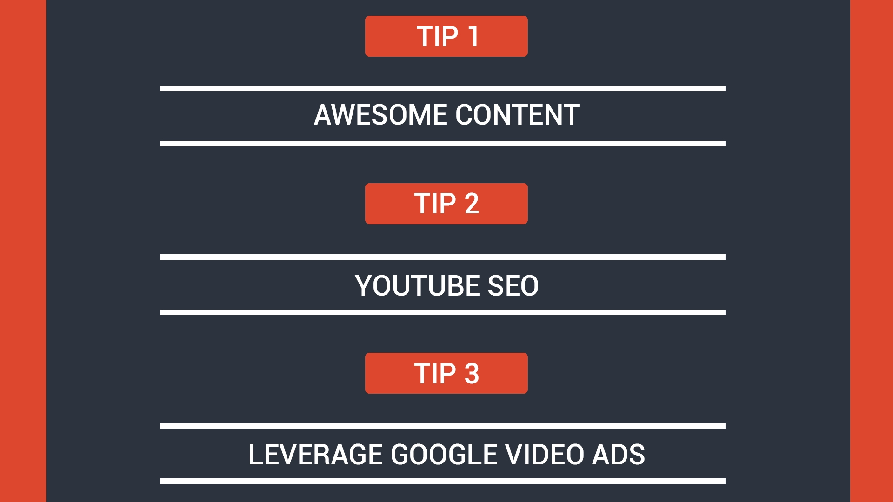
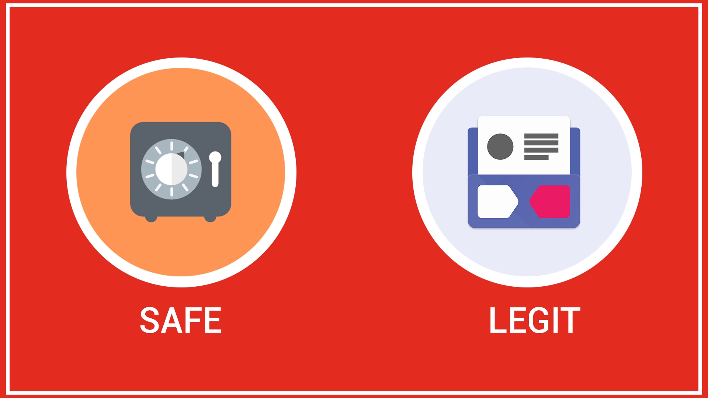
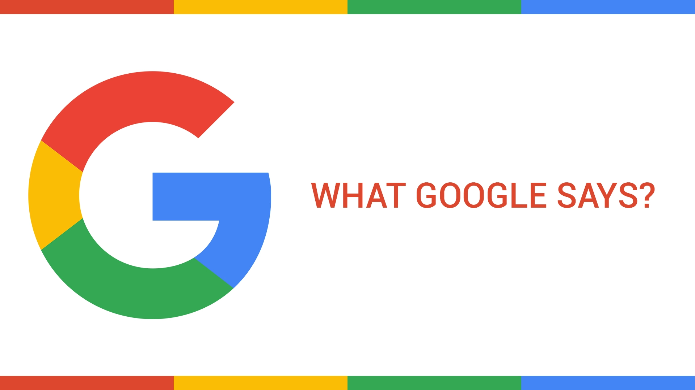
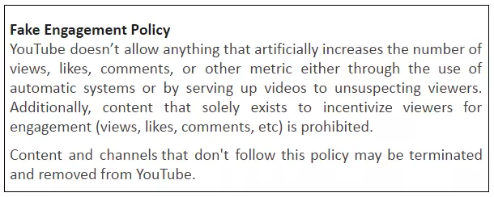

Hi Youtubers!
So, you want to increase your subscribers organically?
Here’s the deal!
You can buy Youtube subscribers from Google!
Confused!
I am sure you are!
Ok, No problem, I will guide you here in this ultimate guide that how you can increase your Youtube channel’s subscribers organically through Google as well outside Google.
Stay tuned!
Buy real organic Youtube subscribers itself from Google
There are various ways through which you can get subscribers through the Youtube’s parent company itself.

Tip 1 : Awesome Content
Nothing beats great content, hence create unique, fresh, mind blowing content which your target audience will love to share
Always choose a particular niche for your channel, as Youtube will understand your content better
You can try creating videos on current trends
Tip2 : Youtube SEO
Rank well in Youtube searches
Yes! Youtube SEO is one of the most important thing when it comes to ranking your videos in Youtube as well as Google. When your video will rank good in Youtube searches for high volume keywords, then it is very high chance that your subscribers will go up!
Your videos should be of more length with respect to your competitions- Use your targeting keywords in the Title & Meta descriptions
- Use appropriate tags
- Use the proper category – e.g. How to
- Use of the words in Titles – Best, Top, How to, Number etc.
Proper thumbnail – Self-explanatory with no click bait
Tip3 : Leverage Google Video Ads
Google Ads is a great platform to reach your target audience on Google and its partners. Hence, you can give it a try to gain more subscribers online with the help of:-
- Google text Ads
- Google display Ads
- Google Video Ads
Drive traffic to your YouTube channel from blog
Another way in which you can increase subscribers organically on your YouTube channel is by driving traffic from a blog. If you launch a supporting blog to your YouTube channel, you can embed your YouTube videos in the blogs. This way those who prefer to watch video content on a certain topic, can do so. These viewers will eventually become your permanent subscribers.
To drive relevant traffic to your Youtube channel in order to increase Youtube subscribers.
However, still, if you are hustling hard with productivity and niche content and still your subscribers count doesn’t increase.
You may be tempted to buy fake views and comments to increase your subscribers in a quick and easy way.
In 2021, many brands and industries are looking to expand their business by buying YouTube subscribers service.
Due to the popular demand of this service, most services sell bots and fake subscribers.
Since, bots are simply a software application that runs automated tasks over the Internet. They achieve subscribers increase instantly. This sudden boost in subscribers count makes the YouTube Algorithm suspicious of your activities and may even flag the account permanently.
According to YouTube, any artificial or automated algorithm used to increase views or subscribers will be removed.
So, that’s absolutely clear that as a brand, a business or an influencer, content creator - you would need more and more YouTube Subscribers to grow your channel, have great engagement in terms of likes, comments, shares.
And the only possible way to grow your YouTube channel the right way is the Organic one.
Still, many Youtubers are indulged into buying Youtube subscribers and get into trouble in the long run and ultimately ruin their channel.
All hard work… vanish..
So what to do?
If as a Youtuber, you want to buy YouTube subscribers from the bot sites that provide fake subscribers using software, then first of all, be assured that one day or the other, your Youtube channel will definitely be punished for this untrusted activity and you will never have a chance of channel monetisation.
Why you need Safe and Secured Youtube Subscribers?

Buying YouTube subscribers is safe and legit, but if and only if you gather (not buy) it the right way from authentic vendor that give real people as subscribers gained organically through various techniques such as SEO, SEM, SMO, utilizing social media communities, groups etc . These will be the subscribers which will achieve you great engagement as they are active subscribers.
What Google says?

According to Google, YouTube doesn’t allow any automated increase in views or subscribers.

This implies any YouTube channel using bots or fake views or subscribers will eventually be flagged or removed.
Getting flagged on YouTube as a channel also impact your overall digital presence on the internet as YouTube is the 2nd most used social media platform as well search engine.
Organic and real subscribers are active user accounts, who use YouTube almost every single day as per the personalised and niche content they prefer.
This ensures more views, comments, shares and the ultimately leading to the growth of your channel in the best way possible.
Well well!
Still, wondering if you can do it without being flagged by YouTube as 99.99% companies provide fake subscribers from bots?
So, here’s a secret to buy (gather) YouTube subscribers the right way that is safe and secure, and still not being flagged by Youtube.
How realsubscribers.com is unique for providing real and organic Youtube subscribers?
Realsubscribers.com makes sure to follow YouTube community guidelines for the security of your channel and grow your channel naturally through ethical ways.
We strictly do not believe in selling fake or bot subscribers, we strategically work towards increasing YouTube subscribers with real, active and organic users who will definitely engage with your content proactively.
Realsusbcribers.com is proud to be the best place to buy real and active YouTube subscribers as we expertise in quality and growth, data and security of our customers.We have dedicated and committed teams of social media as well as search engine optimization who continuously work on the improvisation of Youtubers and get them excellent results.
Youtubers feel relaxed when they become our customers, as they are not buying Youtube subscribers, they are actually aggregating their target audience!
Option to buy targeted Youtube subscribers from realsubscribers.com:-
As a youtuber, you may benefit more from targeted subscribers as they will make sure your engagement rate and view count is high.
Targeted subscribers are an audience who are selected according to the genre or category of content they watch. They are your true potential audience who are active and follow youtubers dedicatedly.
In 2018 at CES Convention,Chief Product Officer of YouTube, Neal Mohan said YouTube is continuously working on being a recommendation-driven viewing video platform.
The recommendation of videos is determined by the pattern of the viewers YouTube history or categorically preference of content.
This recommendation option can be advantageously used by any YouTube channel looking for a target-based audience.
So, when are you planning to grow your Youtube channel and aggregate your potential customers!
Talk to our product consultants right now and be a winner.